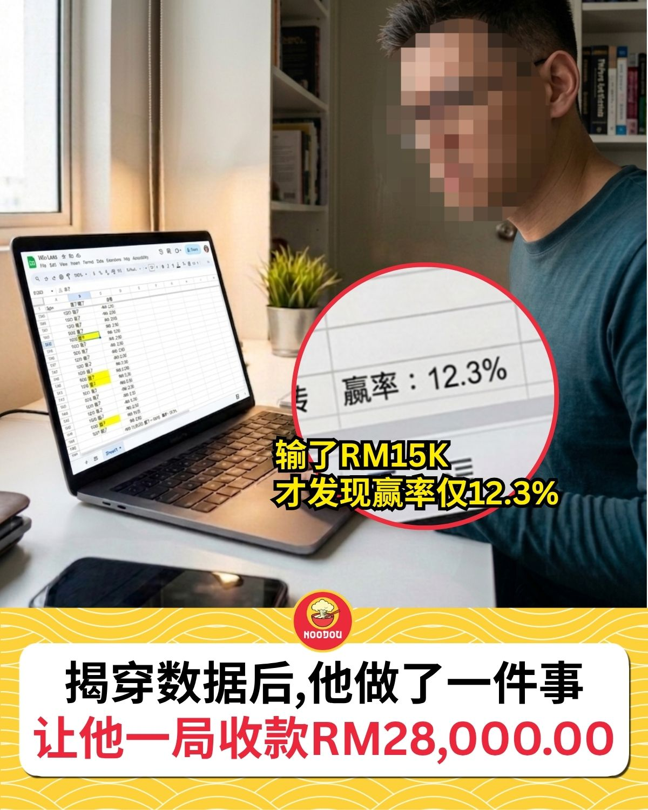
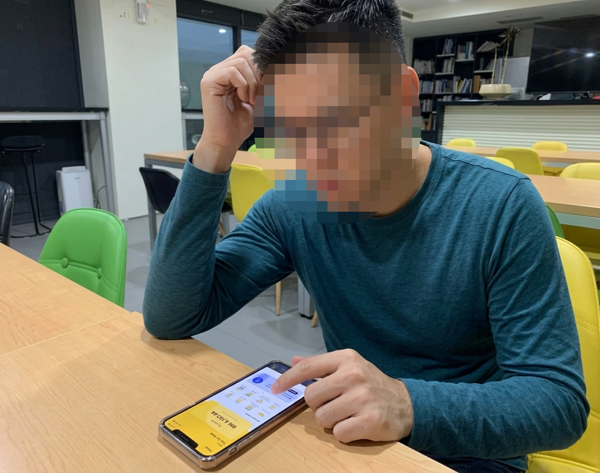
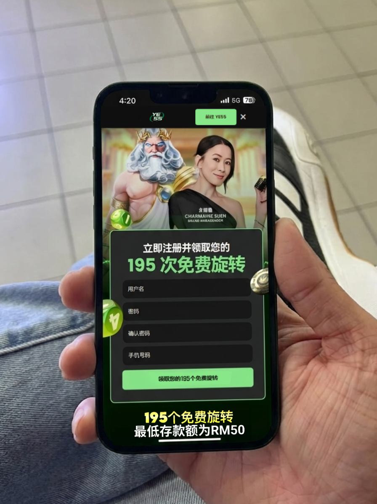
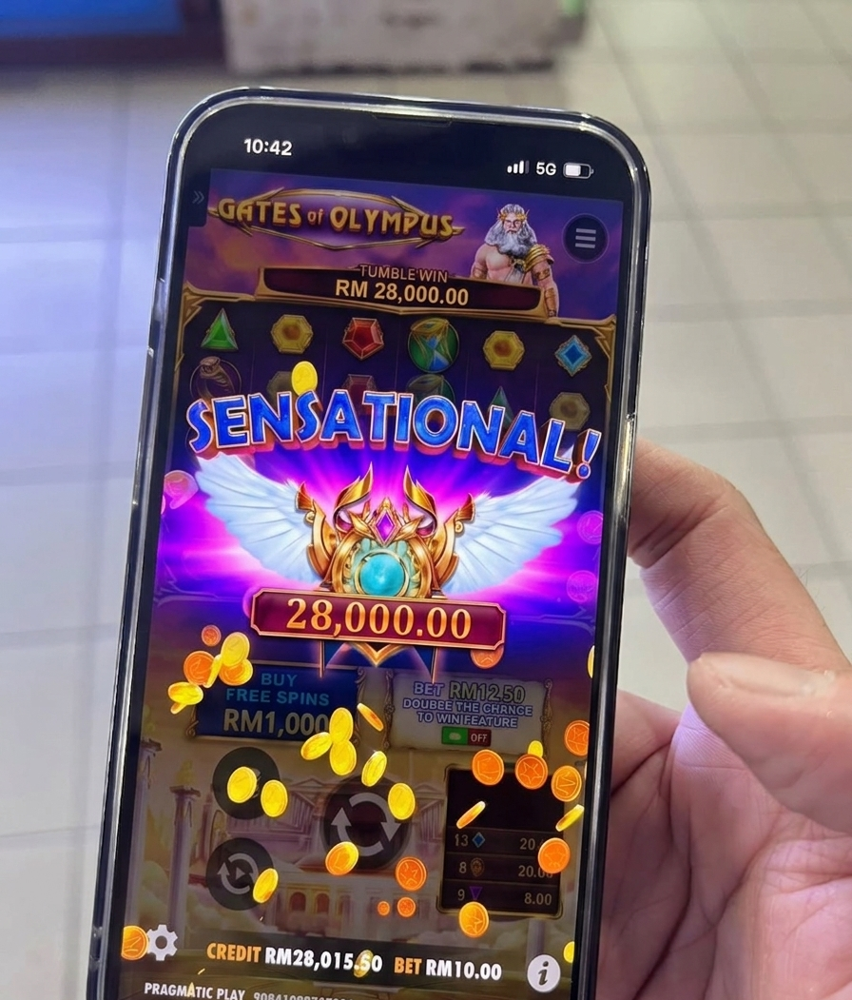
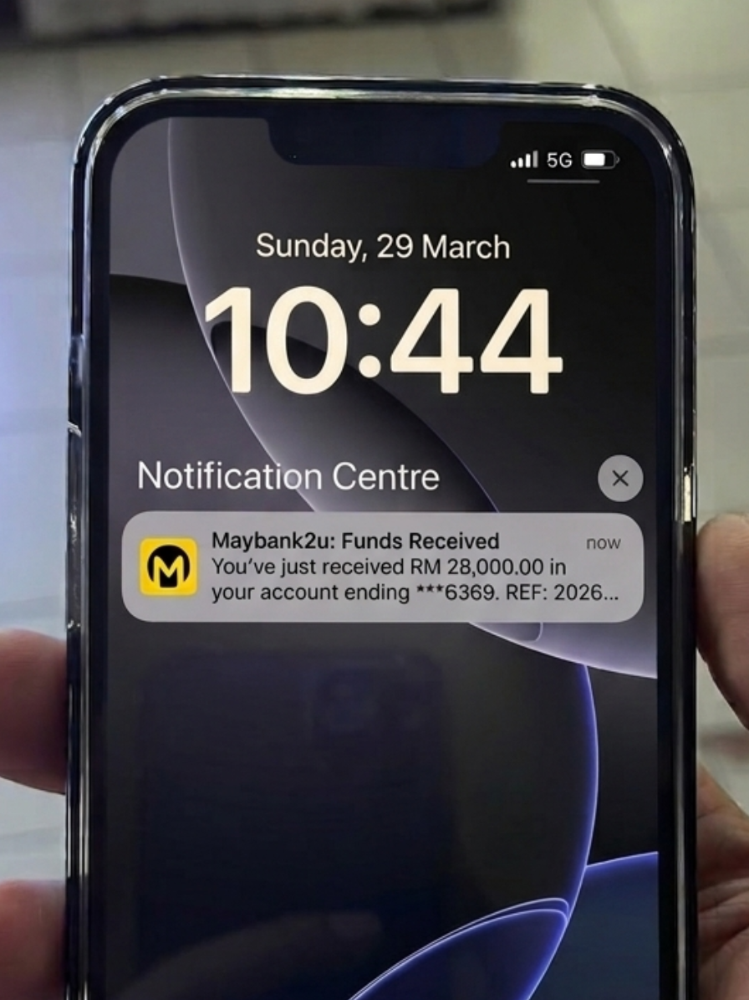

"12.3%的赢率不是运气差，是有人在偷我的钱。"
凌晨两点十五分。眼睛干涩得像砂纸。Excel 表格上1,247行数据。赢率：12.3%。
Ah Keat（化名）做了十五年的账，他知道这个数字不对。有人在偷他的钱。

图片：Ah Keat 在办公室
Ah Keat 在 PJ 一间中型公司做会计主管，月薪 RM4,500。每天帮老板管几百万的数字，做完公司的账回到家，打开自己的银行 App，余额从来没超过5位数。
他不是不努力。薪水年年涨两三百块，物价年年涨两三千块。信用卡的数字每个月只往上爬，从来不往下。
女儿想学钢琴，说了三年了。每次问起来，他都说"下个月"。说到后来女儿也不问了。
他知道靠打工是没有出头的。他需要一个额外的收入来源。
一年前，Ah Keat 开始在几个热门平台玩 Gates of Olympus。
他不是随便玩的。每次存 RM100 到 RM200，控制注码，做好止损。他以为用纪律就能赢。
但他是会计师。他做了一件普通玩家不会做的事：打开 Excel，记录每一转的结果。
六个月后，1,247转的数据摆在面前：赢了154转。赢率12.3%。
Gates of Olympus 标注的 RTP 是96.5%。就算考虑高波动性，一千多转下来，赢率不应该这么低。
更让他愤怒的是提款。有一次赢了 RM2,800，申请提款后被告知"注单审核"，等了5天，到手只剩一半。另一次赢了 RM4,200，直接被拒，理由是"异常投注模式"。
赢几百块，秒到。赢超过两千，就"审核"。
一年下来，他亏了 RM15,000。四个多月的薪水。
Ah Keat 换了三个平台。结果一模一样，赢率永远不超过15%。
一天深夜，他在一个技术论坛看到一个帖子。发帖的人自称是某代理平台的前技术人员。
帖子里写：那些代理平台的后台有一个东西叫 "RTP 滑块"。正规的 Pragmatic Play 游戏，RTP 固定96.5%，谁都改不了。但代理平台用的是盗版源码，后台有个滑块，管理员可以把赢率从96.5%拉到40%，甚至更低。你以为是运气，其实是数学。
"你以为是运气，其实是数学。管理员把滑块一拉，你的赢率就从96.5%变成40%。"
Ah Keat 看到这段话的时候，手是冰的。
12.3%。他的 Excel 没有骗他。是平台在骗他。
不是他策略有问题，不是他运气差。是他在一个被调低了赢率的游戏里拼命挣扎。
那个前技术人员在帖子最后说：想验证？去找一个直连 Pragmatic Play 总部的平台。没有代理，没有中间商。原始的 RTP，谁都改不了。

Ah Keat 花了一个星期查。查服务器连接，查游戏供应商合作关系，查牌照。
他找到了 YE55。直营平台，直连 Pragmatic Play 正版游戏。没有代理，没有中间商。
他不在乎免费旋转。他只在乎一件事：RTP 有没有被动过。
他的 TNG 还有 RM50。那本来是这周的 toll 钱。
凌晨两点半。老婆和女儿都睡了。他坐在客厅的餐桌前，打开 YE55，选了 Gates of Olympus。
他没有感情用事。他在验证一个假设。
前20转，他在测试。Scatter 掉落频率，倍数球分布，Free Spins 触发间隔。他在脑子里跑数据。
感觉不一样。以前那些平台，你能感觉到游戏在"卡"你。这里没有那种感觉。Scatter 自然掉落，倍数球分布合理。
第38转，4个 Scatter 同时掉下来。Free Spins。
第6转，一个 x100 的倍数球掉下来，连上了满屏的皇冠符号。
第11转，闪电劈下来。x500。
数字不停跳动。消除掉落一轮接一轮。
Free Spins 结束时，屏幕上的数字是 RM28,000。

图片：RM28,000到账通知
Ah Keat 坐在椅子上，一动不动。
这个数字本身不是重点。重点是接下来会发生什么。
以前每次到这一步，就是噩梦的开始。"审核中"，"异常投注"，"请耐心等待"。等一个星期，钱就不见了。
他按下提款。全额。到他的银行户口。
他盯着手机屏幕。他在等那个熟悉的"审核中"通知。
3分钟。
手机震了一下。银行 app 弹出一个通知。
RM28,000。已到账。
不是"审核中"。不是"异常投注"。是实实在在地躺在他的银行 App 里。
他没有跳起来。他没有大叫。他怕吵醒女儿。
他打开计算机。RM28,000，扣掉这一年亏的 RM15,000，还净赚 RM13,000。够还清信用卡。够交两年的钢琴课学费。
他关掉了那个 Excel 表格。记录了六个月、1,247转的那个。他再也不需要了。
他走到女儿房间门口。门缝透出一点点走廊的光。
"下个月"终于到了。
Ah Keat 现在还是在公司做会计。但每天晚上家人睡了之后，他都会打开 YE55 玩一两个小时。
"以前是对着 Excel 算为什么输。现在是对着屏幕看闪电劈下来。心情完全不一样。"
女儿上个月正式开始学钢琴了。信用卡也还清了。他说最重要的不是赚了多少，是终于知道以前不是自己的问题。

图片：来自YE55的TNG转账记录
以下是 Ah Keat 验证后的步骤：
第一步： 点击下方官方链接进入 YE55 注册页面
第二步： 用TNG充值 RM50，马上领取 195次免费旋转
第三步： 选择直连 Pragmatic Play 的 Gates of Olympus，RTP 没有被动过
第四步： 开始转！Scatter 自然掉落，倍数球合理分布，闪电劈下来看数字叠上去
第五步： 按提款，3分钟到账，不用等不用审核